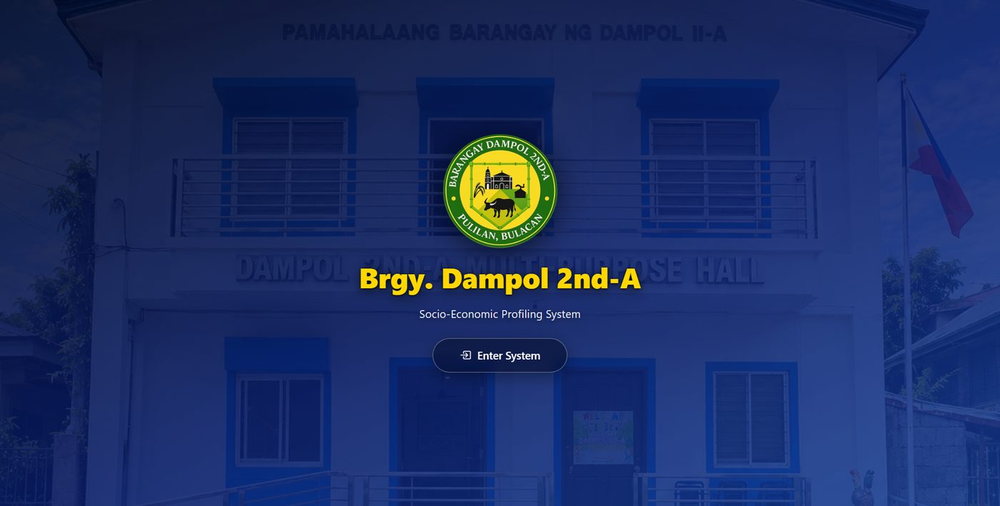
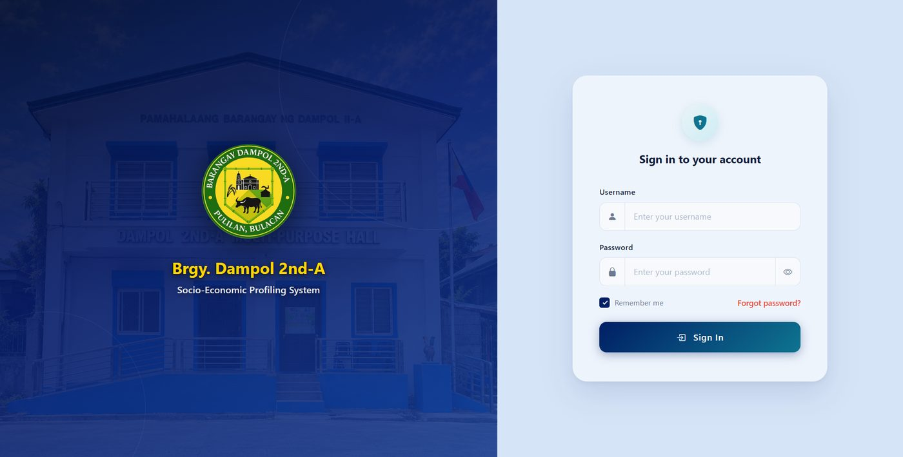
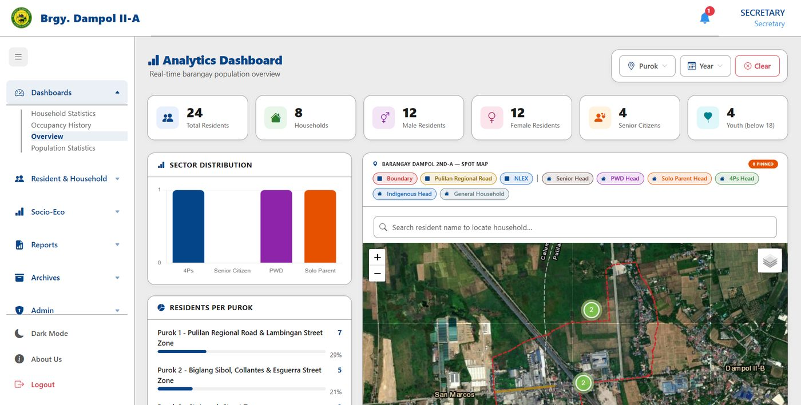
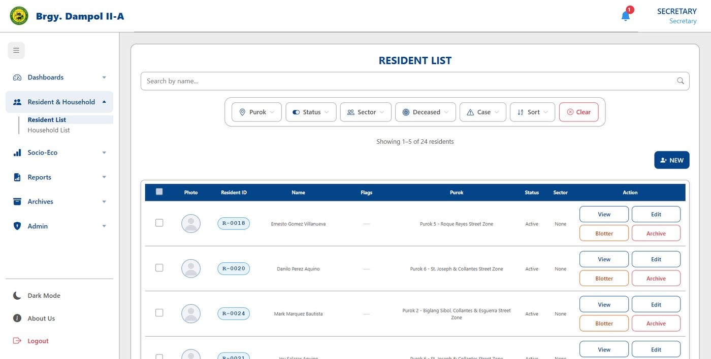
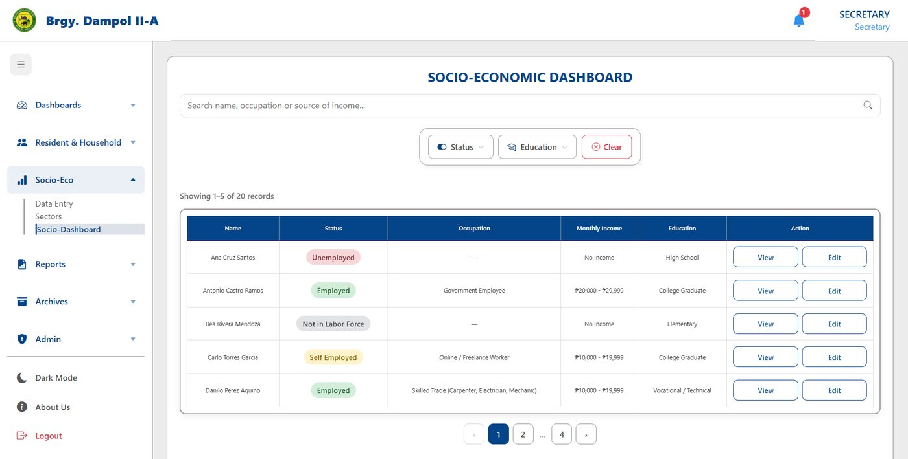

Web-Based Barangay Information and Socio-Economic Profiling System
Built for the Office of Barangay Dampol 2nd-A, Pulilan, Bulacan
A full-stack web application that replaces paper and spreadsheet records in a barangay office. Staff can register residents and households, record socio-economic data, see households on a map, and produce reports.
What it does
- Dashboards for population, household and sector statistics
- Resident and household profiling with search and filtering
- Socio-economic profiling: income, employment and education
- Verification of 4Ps, PWD, senior citizen and solo parent records
- Household map by purok, built with Leaflet
- Demographic, household and socio-economic reports with PDF and Excel export
- Role-based access for admin, secretary and staff accounts
- Activity logs, archives, and data backup and restore
Screenshots
Taken with sample data. Select a screenshot to open it full size.
-

Landing page -

Login page -

Overview dashboard with household map -

Resident list -

Socio-economic dashboard